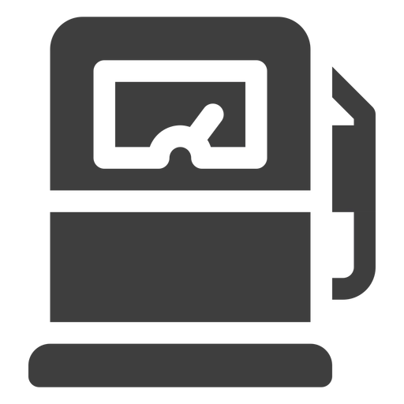
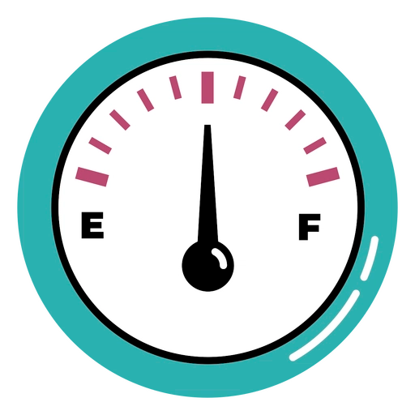
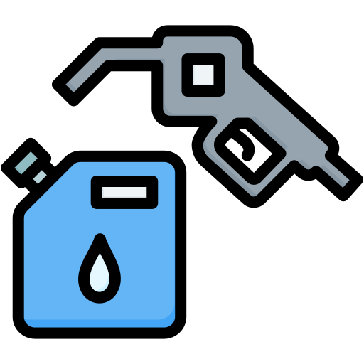
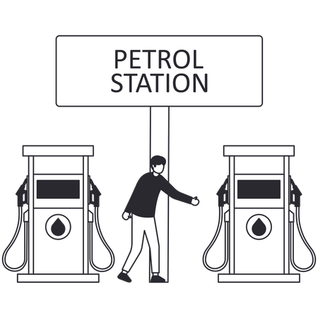

Sistema de combustible
Define cómo se entrega la gasolina al motor. Puede ser carburador o inyección electrónica. La inyección es más moderna y eficiente, ya que ajusta automáticamente la mezcla según las condiciones. Esto mejora el rendimiento, reduce el consumo y facilita el arranque.

aqui una lista de modelos que puden ser de utilidad
- Injection. PGM-FI; 26mm throttle body
- Injection. PGM-FI
- Injection. PGM-FI electronic fuel injection (throttle by wire)
- Injection. PGM-FI Fuel injection with automatic enrichment circuit and 36mm throttle bodies
- Injection. PGM-FI
- Carburettor
- Injection. Fuel injection with 38mm throttle body
- Injection. PGM-FI with 34mm throttle bodies
- Injection. Programmed Dual Stage Fuel Injection (PGM-DSFI) with 48mm throttle bodies, Denso 12-hole injectors
- Injection. Programmed Dual Stage Fuel Injection (PGM-DSFI) with 52mm throttle bodies, Denso 12-hole injectors
- Injection. PGM-Fi, 38mm throttle body
- Injection. Dual Stage Fuel Injection (DSFI) with 40mm throttle bodies, Denso 12-hole injectors
- Injection. PGM-FI with 32mm throttle bodies
- Carburettor. BS26
- Injection
- Carburettor. 13 mm
- Injection. Yamaha Fuel Injection (YFI), 44mm
- Injection. 34mm
- Injection. Yamaha Fuel Injection (YFI), 34mm
- Injection. Mikuni, 38 mm
- Injection. Fuel injection with YCC-T
- Injection. 12-hole fuel injectors
- Carburettor. Keihin CVK32
- Injection. DFI with 2 x 36mm Mikuni throttle bodies
- Injection. DFI with four 40mm throttle bodies
- Carburettor. Keihin PTE 16
- Carburettor. Mikuni PTE 16
- Injection. DFI w/40mm Throttle Body
- Carburettor. 18mm Keihin carburetor and screw type throttle limiter on grip housing
- Carburettor. Keihin 20mm
- Injection. DFI® with 32mm Keihin throttle body
- Injection. DFI® with 34mm Keihin throttle body
- Injection. DFI® with 44mm Keihin throttle body
- Carburettor. Keihin 28mm
- Injection. DFI® with 44mm Keihin throttle body and dual injectors
- Carburettor. Mikuni 24mm
- Injection. DFI® with dual 36mm Keihin throttle bodies
- Injection. DFI w/38mm Keihin throttle bodies (4) and oval sub-throttles
- Injection. Ø38 mm
- Injection. 28 mm
- Carburettor. Mikuni BS 22
- Injection. Suzuki Dual Throttle Valve System
- Injection. Suzuki Dual Throttle Valve system
- Injection. Suzuki fuel injection with SDTV
- Carburettor. Mikuni BS40, single
- Carburettor. Mikuni BST40
- Carburettor. Mikuni VM20SS
- Carburettor. Mikuni BSR36
- Carburettor. Mikuni BSR36, single
- Carburettor. Mikuni VM13
- Carburettor. Mikuni BST31SS
- Injection. Ride-by-Wire throttle bodies
- Injection. Suzuki Fuel injection with Ride-by-Wire throttle bodies
- Injection. Electronic port fuel injection/digital engine management: BMS-ME with e-throttle grip
- Injection. Electronic fuel injection
- Injection. Electric throttle Ride by wire
- Injection. Electronic intake pipe injection digital engine management system: BMS-O with throttle-by-wire
- Injection. Electronic fuel injection with ride-by-wire throttle system
- Injection. Electronic fuel injection with ride-by-wire throttle system, variable intake, and knock sensor
- Injection. Electronic intake pipe injection
- Injection. Electronic port fuel injection, digital engine control: BMS-O with throttle by wire
- Injection. Electronic intake pipe fuel injection
- Injection. Electronic intake manifold fuel injection/digital engine management: BMS-O with electromotive throttle controller
- Injection. Electronic intake pipe fuel injection, BMS-K+ electronic engine management with overrun cut-off, twin-spark ignition
- Injection. Electronic port fuel injection
- Injection. Electronic intake pipe injection / digital engine management with overrund cutoff, twin-spark
- Injection. Bosch electronic fuel injection system, elliptical throttle bodies with Ride-by-Wire, equivalent diameter 56 mm
- Injection. 53 mm throttle bodies with full Ride by Wire system
- Injection. 46mm eliptical throttle bodies with Ride-by -Wire system
- Injection. 53 mml throttle bodies with Ride-by -Wire system
- Injection. Twin injectors per cylinder. Full ride-by-wire elliptical throttle bodies.
- Injection. Electronic fuel injection system. Twin injectors per cylinder. Full ride-by-wire elliptical throttle bodies.
- Injection. Electronic fuel injection, 55 mm throttle body with full Ride by Wire (RbW)
- Injection. EFI, 55 mm throttle body with full Ride by Wire (RbW)
- Injection. EFI, 50 mm throttle body
- Injection. Electronic fuel injection, 50 mm throttle body
- Injection. 50 mm throttle body
- Injection. Eelectronic fuel injection, twin injectors, elliptical throttle bodies
- Injection. Electronic fuel injection system, elliptical throttle bodies with Ride-by-Wire, equivalent diameter 56 mm
- Injection. Throttle bodies with full Ride by Wire system
- Injection. 53 mmThrottle bodies with full Ride by Wire system
- Injection. Electronic fuel injection 53mm throttle bodies with Ride-by-Wire system
- Carburettor. Mikuni TMX 38mm flat slide
- Carburettor. Mikuni TMX
- Carburettor. Mikuni TMX.
- Injection. Multipoint sequential electronic injection
- Injection. Multipoint sequential electronic fuel injection
- Injection. Multipoint sequential electronic fuel injection with forced air induction and SAI
- Injection. Ride-by-Wire
- Injection. Multipoint sequential electronic fuel injection
- Injection. Multipoint sequential electronic fuel injection with electronic throttle control
- Injection. Multipoint sequential electronic fuel injection with SAI
- Injection. Integrated engine management system. Electronic fuel injection with ride-by-wire electronic throttle control.
- Injection. Airbox with front dynamic air intakes, two Ø48-mm throttle bodies
- Injection. Airbox with front dynamic air intakes. 4 Weber-Marelli 48-mm throttle bodies with 4 injectors and latest generation Ride-by-Wire engine management. Choice of three different engine maps selectable by the rider with bike in motion: T (Track), S (Sport), R
- Carburettor. Electronically controlled Dell’Orto PHVA 17.5 carburettor
- Carburettor. Dell´Orto PHVA 17.5
- Carburettor. Dell’Orto
- Injection. Ride by Wire integrated engine control system.
- Injection. Airbox with head-on intake. 2 x 48 mm throttle body, Ride-by-wire engine management
- Injection. Airbox with head-on intake. 2 48 mm throttle body, Ride-by-wire engine management
- Injection. Airbox with front dynamic air intakes. 4 Weber-Marelli 48-mm throttle bodies with 4 injectors and latest generation Ride-by-Wire engine management that the rider can select on the fly: T (Track), S (Sport), R (Race).
- Carburettor. Magneti Marelli M3G ø 32mm ECU
- Injection. Magneti Marelli M3G ø 32mm ECU
- Injection. Electronic Sequential Port Fuel Injection
- Injection. Electronic Sequential Port Fuel Injection (ESPFI)
- Injection. ESPFI
- Injection. Electronic Sequential Port Fuel Injection
- Injection. Electronic Sequential Port Fuel Injection
- Injection. Closed loop fuel Injection, 52mm dual bore
- Injection. Closed loop fuel Injection / 52mm dual bore
- Injection. Closed Loop Sequential Port injection
- Injection. Closed Loop Sequential Port injection, 54mm
- Injection. Closed loop fuel injection, 54 mm bore
- Injection. Closed Loop Sequential Port Fuel Injection
- Injection. Closed loop fuel injection / 54 mm bore
- Injection. Closed Loop Sequential Port Fuel Injection, 60mm
- Injection. Closed Loop Fuel Injection, 60 mm Bore
- Injection. Closed loop fuel injection, 54 mm bore.
- Injection. Integrated ignition - injection system MVICS 2.1 (Motor and Vehicle Integrated Control System) with eight injectors (4 lower fuel injectors by Mikuni + 4 upper fuel injectors by Magneti Marelli with increased fuel flow)
- Injection. Integrated ignition - injection system MVICS 2.1 (Motor and Vehicle Integrated Control System) with eight injectors (4 lower fuel injectors by Mikuni + 4 upper fuel injectors by Magneti Marelli with increased fuel flow).
- Injection. Integrated ignition - injection system MVICS 2.0 (Motor and Vehicle Integrated Control System) with six injectors. Engine control unit Eldor EM2.0, throttle body full ride by wire Mikuni, pencil-coil with ion-sensing technology, control of detonation
- Injection. Integrated ignition - injection system MVICS 2.1 (Motor and Vehicle Integrated Control System) with six injectors.
- Injection. Mikuni Full Ride-By-Wire
- Injection. Integrated ignition - injection system MVICS (Motor and Vehicle Integrated Control System) with six injectors
- Injection. Integrated ignition - injection system MVICS (Motor and Vehicle Integrated Control System)
- Injection. MVICS 2.1
- Injection. 3 47mm throttle bodies
- Injection. 3 x 47mm throttle bodies
- Injection. MVICS 2.0 (Motor and Vehicle Integrated Control System) with three injectors.
- Injection. Integrated ignition - injection system MVICS (Motor and Vehicle Integrated Control System) with eight injectors.
- Injection. Integrated ignition - injection system MVICS (Motor and Vehicle Integrated Control System) with eight injectors (4 lower fuel injectors by Mikuni + 4 upper fuel injectors by Magneti Marelli with increased fuel flow).
- Injection. Electronic fuel injection with double throttle body ø 37 mm
- Injection. Electronic fuel injection with double throttle body
- Injection. Electronic fuel injection with throttle body d.28
- Injection. Electronic fuel injection with throttle body ø 37 mm
- Injection. Electronic fuel injection with 38 mm throttle body
- Injection. Electronic fuel injection with throttle body ø 37 mm
- Injection. Two throttle bodies ø37 mm
- Injection. EFI
- Carburettor. 44 mm Keihin
- Carburettor. 44mm Keihin
- Carburettor. Keihin, 42mm
- Carburettor. Keihin, 42 m
- Carburettor. Keihin, 42 mm
- Carburettor. Keihin, 44mm
- Carburettor. 38 mm flat slide MIKUNI TMX
- Injection. Keihin
- Injection. Weber-Marelli electronic fuel injection
- Injection. Weber-Marelli
- Injection. Magneti Marelli IAW7SM; “ride by wire” Ø 52 mm throttle body
- Injection. Magneti Marelli IAW7SM
- Injection. Weber-Marelli electronic fuel injection.
- Injection. DTS-i
- Injection. DTS-i Ei
- Injection. DTS-i Fi
- Injection. DTS-i FI
- Injection. Bosch
- Injection. Bosch - closed loop
- Injection. ETFi
- Carburettor. CV type
- Injection. Eco-Thrust Fuel Injection
- Injection. ETFi - Eco Thrust Fuel Injection Technology
- Injection. ET – FI Eco Thrust Fuel Injection Technology
- Carburettor. Ucal BS-29
- Carburettor. Optional injection
- Carburettor. Injection in Japan and Europe
- Carburettor. HSR carburetor
- Carburettor. Injection variant sold in Europe.
- Carburettor. Injection in Japan
- Carburettor. Injection variant sold Japan.
Control de combustible
Es el sistema que regula la cantidad exacta de gasolina que entra al motor. Un buen control permite una combustión más eficiente, lo que se traduce en mejor desempeño y menor gasto..

aqui una lista de modelos que puden ser de utilidad
- Single Overhead Cams (SOHC)
- Overhead Valves (OHV)
- Overhead Cams (OHC)
- Double Overhead Cams/Twin Cam (DOHC)
- Desmodromic valve control
- Pushrods
Capacidad de combustible
Es la cantidad de gasolina que puede almacenar el tanque. Este dato influye directamente en la autonomía, es decir, cuántos kilómetros puedes recorrer sin parar a repostar. Es muy importante para viajes largos..

aqui una lista de modelos que puden ser de utilidad
- 8.00 litres (2.11 US gallons)
- 11.70 litres (3.09 US gallons)
- 10.00 litres (2.64 US gallons)
- 5.30 litres (1.40 US gallons)
- 24.80 litres (6.55 US gallons)
- 5.50 litres (1.45 US gallons)
- 4.00 litres (1.06 US gallons)
- 16.20 litres (4.28 US gallons)
- 11.00 litres (2.91 US gallons)
- 10.10 litres (2.67 US gallons)
- 14.00 litres (3.70 US gallons)
- 13.00 litres (3.43 US gallons)
- 12.00 litres (3.17 US gallons)
- 10.22 litres (2.70 US gallons)
- 15.00 litres (3.96 US gallons)
- 16.70 litres (4.41 US gallons)
- 17.50 litres (4.62 US gallons)
- 15.40 litres (4.07 US gallons)
- 16.10 litres (4.25 US gallons)
- 16.28 litres (4.30 US gallons)
- 12.87 litres (3.40 US gallons)
- 17.10 litres (4.52 US gallons)
- 18.00 litres (4.76 US gallons)
- 4.20 litres (1.11 US gallons)
- 25.00 litres (6.61 US gallons)
- 5.20 litres (1.37 US gallons)
- 6.43 litres (1.70 US gallons)
- 17.00 litres (4.49 US gallons)
- 18.93 litres (5.00 US gallons)
- 21.95 litres (5.80 US gallons)
- 5.68 litres (1.50 US gallons)
- 23.09 litres (6.10 US gallons)
- 3.79 litres (1.00 US gallons)
- 7.57 litres (2.00 US gallons)
- 6.20 litres (1.64 US gallons)
- 5.00 litres (1.32 US gallons)
- 6.40 litres (1.69 US gallons)
- 6.21 litres (1.64 US gallons)
- 15.14 litres (4.00 US gallons)
- 9.20 litres (2.43 US gallons)
- 4.30 litres (1.14 US gallons)
- 15.52 litres (4.10 US gallons)
- 18.20 litres (4.81 US gallons)
- 19.50 litres (5.15 US gallons)
- 15.50 litres (4.10 US gallons)
- 10.60 litres (2.80 US gallons)
- 10.50 litres (2.77 US gallons)
- 13.50 litres (3.57 US gallons)
- 4.80 litres (1.27 US gallons)
- 3.00 litres (0.79 US gallons)
- 12.50 litres (3.30 US gallons)
- 10.30 litres (2.72 US gallons)
- 16.00 litres (4.23 US gallons)
- 12.80 litres (3.38 US gallons)
- 23.00 litres (6.08 US gallons)
- 11.50 litres (3.04 US gallons)
- 10.98 litres (2.90 US gallons)
- 26.50 litres (7.00 US gallons)
- 16.50 litres (4.36 US gallons)
- 19.68 litres (5.20 US gallons)
- 29.90 litres (7.90 US gallons)
- 18.17 litres (4.80 US gallons)
- 16.01 litres (4.23 US gallons)
- 24.22 litres (6.40 US gallons)
- 23.85 litres (6.30 US gallons)
- 21.00 litres (5.55 US gallons)
- 14.50 litres (3.83 US gallons)
- 20.00 litres (5.28 US gallons)
- 22.00 litres (5.81 US gallons)
- 7.50 litres (1.98 US gallons)
- 9.00 litres (2.38 US gallons)
- 9.50 litres (2.51 US gallons)
- 8.50 litres (2.25 US gallons)
- 17.40 litres (4.60 US gallons)
- 12.11 litres (3.20 US gallons)
- 18.50 litres (4.89 US gallons)
- 7.00 litres (1.85 US gallons)
- 17.90 litres (4.73 US gallons)
- 22.71 litres (6.00 US gallons)
- 13.60 litres (3.59 US gallons)
- 7.90 litres (2.09 US gallons)
- 18.90 litres (4.99 US gallons)
- 21.20 litres (5.60 US gallons)
- 13.25 litres (3.50 US gallons)
- 11.73 litres (3.10 US gallons)
- 13.20 litres (3.49 US gallons)
- 22.70 litres (6.00 US gallons)
- 20.80 litres (5.50 US gallons)
- 12.90 litres (3.41 US gallons)
- 21.50 litres (5.68 US gallons)
- 12.70 litres (3.36 US gallons)
- 7.20 litres (1.90 US gallons)
- 2.30 litres (0.61 US gallons)
- 3.70 litres (0.98 US gallons)
- 20.50 litres (5.42 US gallons)
- 5.10 litres (1.35 US gallons)
- 5.80 litres (1.53 US gallons)
- 8.40 litres (2.22 US gallons)
- 6.10 litres (1.61 US gallons)
- 7.95 litres (2.10 US gallons)
- 9.84 litres (2.60 US gallons)
Consumo
Indica cuánta gasolina utiliza la moto en condiciones normales. Es uno de los factores más relevantes para el uso diario, ya que impacta directamente en el gasto económico..

aqui una lista de modelos que puden ser de utilidad
- 3.40 litres/100 km (29.4 km/l or 69.18 mpg)
- 1.79 litres/100 km (55.9 km/l or 131.41 mpg)
- 4.90 litres/100 km (20.4 km/l or 48.00 mpg)
- 1.57 litres/100 km (63.7 km/l or 149.82 mpg)
- 1.89 litres/100 km (52.9 km/l or 124.46 mpg)
- 6.02 litres/100 km (16.6 km/l or 39.07 mpg)
- 5.80 litres/100 km (17.2 km/l or 40.56 mpg)
- 1.48 litres/100 km (67.6 km/l or 158.93 mpg)
- 2.13 litres/100 km (46.9 km/l or 110.43 mpg)
- 3.31 litres/100 km (30.2 km/l or 71.06 mpg)
- 3.50 litres/100 km (28.6 km/l or 67.21 mpg)
- 3.60 litres/100 km (27.8 km/l or 65.34 mpg)
- 6.19 litres/100 km (16.2 km/l or 38.00 mpg)
- 6.60 litres/100 km (15.2 km/l or 35.64 mpg)
- 2.41 litres/100 km (41.5 km/l or 97.60 mpg)
- 5.35 litres/100 km (18.7 km/l or 43.97 mpg)
- 4.61 litres/100 km (21.7 km/l or 51.02 mpg)
- 1.80 litres/100 km (55.6 km/l or 130.68 mpg)
- 6.20 litres/100 km (16.1 km/l or 37.94 mpg)
- 6.53 litres/100 km (15.3 km/l or 36.02 mpg)
- 3.80 litres/100 km (26.3 km/l or 61.90 mpg)
- 4.06 litres/100 km (24.6 km/l or 57.94 mpg)
- 4.80 litres/100 km (20.8 km/l or 49.00 mpg)
- 6.83 litres/100 km (14.6 km/l or 34.44 mpg)
- 8.00 litres/100 km (12.5 km/l or 29.40 mpg)
- 2.10 litres/100 km (47.6 km/l or 112.01 mpg)
- 1.62 litres/100 km (61.7 km/l or 145.20 mpg)
- 2.50 litres/100 km (40.0 km/l or 94.09 mpg)
- 5.30 litres/100 km (18.9 km/l or 44.38 mpg)
- 5.70 litres/100 km (17.5 km/l or 41.27 mpg)
- 4.10 litres/100 km (24.4 km/l or 57.37 mpg)
- 4.20 litres/100 km (23.8 km/l or 56.00 mpg)
- 3.30 litres/100 km (30.3 km/l or 71.28 mpg)
- 3.33 litres/100 km (30.0 km/l or 70.64 mpg)
- 6.50 litres/100 km (15.4 km/l or 36.19 mpg)
- 4.75 litres/100 km (21.1 km/l or 49.52 mpg)
- 4.70 litres/100 km (21.3 km/l or 50.05 mpg)
- 5.10 litres/100 km (19.6 km/l or 46.12 mpg)
- 5.60 litres/100 km (17.9 km/l or 42.00 mpg)
- 5.50 litres/100 km (18.2 km/l or 42.77 mpg)
- 5.90 litres/100 km (16.9 km/l or 39.87 mpg)
- 6.00 litres/100 km (16.7 km/l or 39.20 mpg)
- 7.60 litres/100 km (13.2 km/l or 30.95 mpg)
- 5.20 litres/100 km (19.2 km/l or 45.23 mpg)
- 5.40 litres/100 km (18.5 km/l or 43.56 mpg)
- 2.62 litres/100 km (38.2 km/l or 89.78 mpg)
- 2.55 litres/100 km (39.2 km/l or 92.24 mpg)
- 2.79 litres/100 km (35.8 km/l or 84.31 mpg)
- 3.83 litres/100 km (26.1 km/l or 61.42 mpg)
- 3.68 litres/100 km (27.2 km/l or 63.92 mpg)
- 4.60 litres/100 km (21.7 km/l or 51.13 mpg)
- 4.50 litres/100 km (22.2 km/l or 52.27 mpg)
- 6.82 litres/100 km (14.7 km/l or 34.49 mpg)
- 5.18 litres/100 km (19.3 km/l or 45.41 mpg)
- 6.43 litres/100 km (15.6 km/l or 36.58 mpg)
- 5.63 litres/100 km (17.8 km/l or 41.78 mpg)
- 4.30 litres/100 km (23.3 km/l or 54.70 mpg)
- 3.87 litres/100 km (25.8 km/l or 60.78 mpg)
- 2.60 litres/100 km (38.5 km/l or 90.47 mpg)
- 4.08 litres/100 km (24.5 km/l or 57.65 mpg)
- 6.90 litres/100 km (14.5 km/l or 34.09 mpg)
- 2.96 litres/100 km (33.8 km/l or 79.47 mpg)
- 3.14 litres/100 km (31.8 km/l or 74.91 mpg)
- 2.40 litres/100 km (41.7 km/l or 98.01 mpg)
- 5.31 litres/100 km (18.8 km/l or 44.30 mpg)
- 4.00 litres/100 km (25.0 km/l or 58.81 mpg)
- 7.20 litres/100 km (13.9 km/l or 32.67 mpg)
- 2.71 litres/100 km (36.9 km/l or 86.80 mpg)
- 5.47 litres/100 km (18.3 km/l or 43.00 mpg)
- 5.00 litres/100 km (20.0 km/l or 47.04 mpg)
- 5.11 litres/100 km (19.6 km/l or 46.03 mpg)
- 5.23 litres/100 km (19.1 km/l or 44.98 mpg)
- 5.74 litres/100 km (17.4 km/l or 40.98 mpg)
- 5.88 litres/100 km (17.0 km/l or 40.00 mpg)
- 6.80 litres/100 km (14.7 km/l or 34.59 mpg)
- 61.00 litres/100 km (1.6 km/l or 3.86 mpg)
- 6.10 litres/100 km (16.4 km/l or 38.56 mpg)
- 6.40 litres/100 km (15.6 km/l or 36.75 mpg)
- 6.70 litres/100 km (14.9 km/l or 35.11 mpg)
- 1.70 litres/100 km (58.8 km/l or 138.37 mpg)
- 3.20 litres/100 km (31.3 km/l or 73.51 mpg)
- 2.80 litres/100 km (35.7 km/l or 84.01 mpg)
- 2.20 litres/100 km (45.5 km/l or 106.92 mpg)
- 3.90 litres/100 km (25.6 km/l or 60.31 mpg)
- 3.57 litres/100 km (28.0 km/l or 65.89 mpg)
- 3.47 litres/100 km (28.8 km/l or 67.79 mpg)
- 3.62 litres/100 km (27.6 km/l or 64.98 mpg)
- 4.21 litres/100 km (23.8 km/l or 55.87 mpg)
- 4.05 litres/100 km (24.7 km/l or 58.08 mpg)
- 8.20 litres/100 km (12.2 km/l or 28.69 mpg)
- 4.99 litres/100 km (20.0 km/l or 47.14 mpg)
- 4.91 litres/100 km (20.4 km/l or 47.91 mpg)
Emisiones
Se refiere a los gases contaminantes que produce la moto. Además de ser importante para el medio ambiente, también está relacionado con normas legales que pueden afectar el uso de la moto en ciertas ciudades..
aqui una lista de modelos que puden ser de utilidad
- 78.9 CO2 g/km. (CO2 - Carbon dioxide emission)
- 41.5 CO2 g/km. (CO2 - Carbon dioxide emission)
- 113.7 CO2 g/km. (CO2 - Carbon dioxide emission)
- 36.4 CO2 g/km. (CO2 - Carbon dioxide emission)
- 43.8 CO2 g/km. (CO2 - Carbon dioxide emission)
- 139.7 CO2 g/km. (CO2 - Carbon dioxide emission)
- 134.6 CO2 g/km. (CO2 - Carbon dioxide emission)
- 34.3 CO2 g/km. (CO2 - Carbon dioxide emission)
- 49.4 CO2 g/km. (CO2 - Carbon dioxide emission)
- 76.8 CO2 g/km. (CO2 - Carbon dioxide emission)
- 81.2 CO2 g/km. (CO2 - Carbon dioxide emission)
- 83.5 CO2 g/km. (CO2 - Carbon dioxide emission)
- 143.6 CO2 g/km. (CO2 - Carbon dioxide emission)
- 153.1 CO2 g/km. (CO2 - Carbon dioxide emission)
- 55.9 CO2 g/km. (CO2 - Carbon dioxide emission)
- 124.1 CO2 g/km. (CO2 - Carbon dioxide emission)
- 107.0 CO2 g/km. (CO2 - Carbon dioxide emission)
- 41.8 CO2 g/km. (CO2 - Carbon dioxide emission)
- 143.8 CO2 g/km. (CO2 - Carbon dioxide emission)
- 151.5 CO2 g/km. (CO2 - Carbon dioxide emission)
- 88.2 CO2 g/km. (CO2 - Carbon dioxide emission)
- 94.2 CO2 g/km. (CO2 - Carbon dioxide emission)
- 111.4 CO2 g/km. (CO2 - Carbon dioxide emission)
- 158.5 CO2 g/km. (CO2 - Carbon dioxide emission)
- 185.6 CO2 g/km. (CO2 - Carbon dioxide emission)
- 48.7 CO2 g/km. (CO2 - Carbon dioxide emission)
- 37.6 CO2 g/km. (CO2 - Carbon dioxide emission)
- 58.0 CO2 g/km. (CO2 - Carbon dioxide emission)
- 123.0 CO2 g/km. (CO2 - Carbon dioxide emission)
- 132.2 CO2 g/km. (CO2 - Carbon dioxide emission)
- 95.1 CO2 g/km. (CO2 - Carbon dioxide emission)
- 97.4 CO2 g/km. (CO2 - Carbon dioxide emission)
- 76.6 CO2 g/km. (CO2 - Carbon dioxide emission)
- 77.3 CO2 g/km. (CO2 - Carbon dioxide emission)
- 150.8 CO2 g/km. (CO2 - Carbon dioxide emission)
- 110.2 CO2 g/km. (CO2 - Carbon dioxide emission)
- 109.0 CO2 g/km. (CO2 - Carbon dioxide emission)
- 118.3 CO2 g/km. (CO2 - Carbon dioxide emission)
- 129.9 CO2 g/km. (CO2 - Carbon dioxide emission)
- 127.6 CO2 g/km. (CO2 - Carbon dioxide emission)
- 136.9 CO2 g/km. (CO2 - Carbon dioxide emission)
- 139.2 CO2 g/km. (CO2 - Carbon dioxide emission)
- 176.3 CO2 g/km. (CO2 - Carbon dioxide emission)
- 120.6 CO2 g/km. (CO2 - Carbon dioxide emission)
- 125.3 CO2 g/km. (CO2 - Carbon dioxide emission)
- 60.8 CO2 g/km. (CO2 - Carbon dioxide emission)
- 59.2 CO2 g/km. (CO2 - Carbon dioxide emission)
- 64.7 CO2 g/km. (CO2 - Carbon dioxide emission)
- 88.9 CO2 g/km. (CO2 - Carbon dioxide emission)
- 85.4 CO2 g/km. (CO2 - Carbon dioxide emission)
- 106.7 CO2 g/km. (CO2 - Carbon dioxide emission)
- 104.4 CO2 g/km. (CO2 - Carbon dioxide emission)
- 158.2 CO2 g/km. (CO2 - Carbon dioxide emission)
- 120.2 CO2 g/km. (CO2 - Carbon dioxide emission)
- 149.2 CO2 g/km. (CO2 - Carbon dioxide emission)
- 130.6 CO2 g/km. (CO2 - Carbon dioxide emission)
- 99.8 CO2 g/km. (CO2 - Carbon dioxide emission)
- 89.8 CO2 g/km. (CO2 - Carbon dioxide emission)
- 60.3 CO2 g/km. (CO2 - Carbon dioxide emission)
- 94.7 CO2 g/km. (CO2 - Carbon dioxide emission)
- 160.1 CO2 g/km. (CO2 - Carbon dioxide emission)
- 68.7 CO2 g/km. (CO2 - Carbon dioxide emission)
- 72.8 CO2 g/km. (CO2 - Carbon dioxide emission)
- 55.7 CO2 g/km. (CO2 - Carbon dioxide emission)
- 123.2 CO2 g/km. (CO2 - Carbon dioxide emission)
- 92.8 CO2 g/km. (CO2 - Carbon dioxide emission)
- 167.0 CO2 g/km. (CO2 - Carbon dioxide emission)
- 62.9 CO2 g/km. (CO2 - Carbon dioxide emission)
- 126.9 CO2 g/km. (CO2 - Carbon dioxide emission)
- 116.0 CO2 g/km. (CO2 - Carbon dioxide emission)
- 118.6 CO2 g/km. (CO2 - Carbon dioxide emission)
- 121.3 CO2 g/km. (CO2 - Carbon dioxide emission)
- 133.2 CO2 g/km. (CO2 - Carbon dioxide emission)
- 136.4 CO2 g/km. (CO2 - Carbon dioxide emission)
- 157.8 CO2 g/km. (CO2 - Carbon dioxide emission)
- 1,415.2 CO2 g/km. (CO2 - Carbon dioxide emission)
- 141.5 CO2 g/km. (CO2 - Carbon dioxide emission)
- 148.5 CO2 g/km. (CO2 - Carbon dioxide emission)
- 155.4 CO2 g/km. (CO2 - Carbon dioxide emission)
- 39.4 CO2 g/km. (CO2 - Carbon dioxide emission)
- 74.2 CO2 g/km. (CO2 - Carbon dioxide emission)
- 65.0 CO2 g/km. (CO2 - Carbon dioxide emission)
- 51.0 CO2 g/km. (CO2 - Carbon dioxide emission)
- 90.5 CO2 g/km. (CO2 - Carbon dioxide emission)
- 82.8 CO2 g/km. (CO2 - Carbon dioxide emission)
- 80.5 CO2 g/km. (CO2 - Carbon dioxide emission)
- 84.0 CO2 g/km. (CO2 - Carbon dioxide emission)
- 97.7 CO2 g/km. (CO2 - Carbon dioxide emission)
- 94.0 CO2 g/km. (CO2 - Carbon dioxide emission)
- 190.2 CO2 g/km. (CO2 - Carbon dioxide emission)
- 115.8 CO2 g/km. (CO2 - Carbon dioxide emission)
- 113.9 CO2 g/km. (CO2 - Carbon dioxide emission)